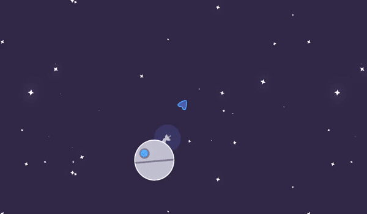
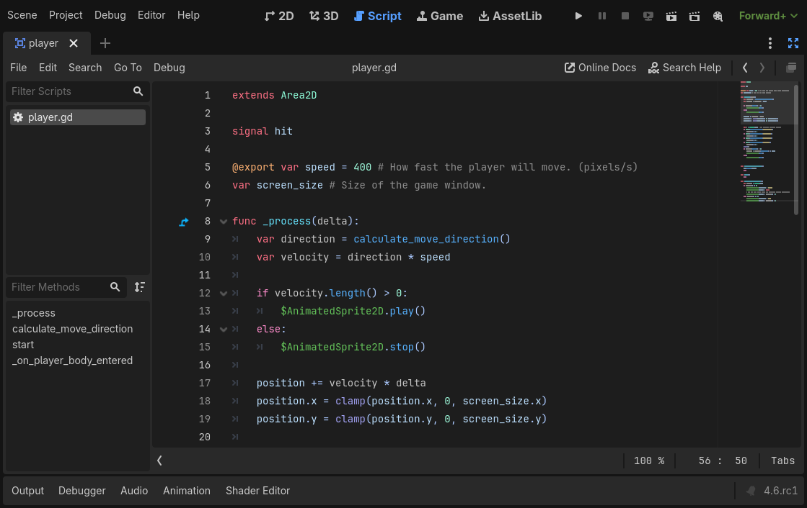
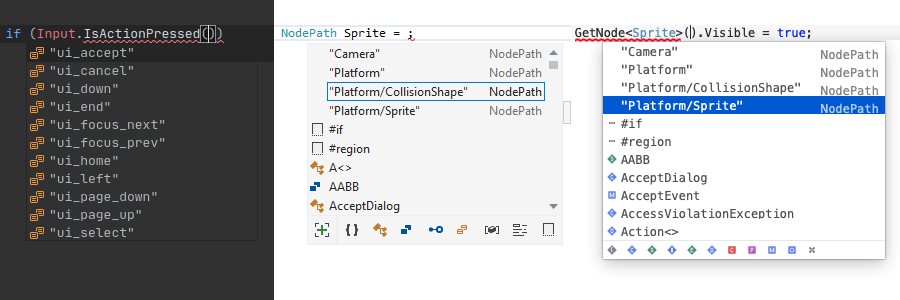
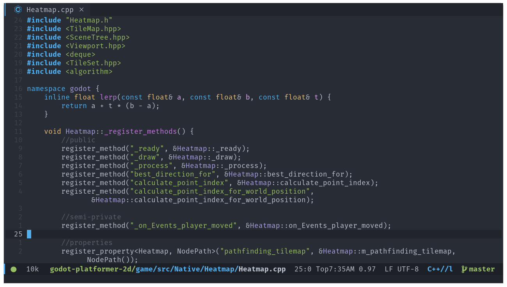

Ngôn ngữ script
Bài học này sẽ giới thiệu tổng quan về các ngôn ngữ script có sẵn trong Godot. Bạn sẽ tìm hiểu ưu và nhược điểm của từng lựa chọn. Trong phần tiếp theo, bạn sẽ viết script đầu tiên bằng GDScript.
Script được gắn vào node và mở rộng hành vi của nó. Điều này có nghĩa là script kế thừa tất cả hàm và thuộc tính của node mà nó được gắn vào.
Ví dụ, lấy một game trong đó node Camera2D đi theo một con tàu. Node Camera2D mặc định đi theo node cha của nó. Hãy tưởng tượng bạn muốn camera rung lên khi người chơi bị trúng đòn. Vì tính năng này không được tích hợp sẵn trong Godot, bạn sẽ gắn một script vào node Camera2D và lập trình hiệu ứng rung.

Các ngôn ngữ script có sẵn
Godot cung cấp bốn ngôn ngữ lập trình gameplay: GDScript, C#, và thông qua công nghệ GDExtension là C và C++. Còn có nhiều ngôn ngữ khác do cộng đồng hỗ trợ, nhưng đây là những ngôn ngữ chính thức.
Bạn có thể dùng nhiều ngôn ngữ trong cùng một dự án. Ví dụ, trong một nhóm, bạn có thể viết logic gameplay bằng GDScript vì nó viết nhanh, và dùng C# hoặc C++ để triển khai các thuật toán phức tạp nhằm tối đa hóa hiệu năng. Hoặc bạn có thể viết mọi thứ bằng GDScript hoặc C#. Tùy bạn quyết định.
Chúng tôi mang đến sự linh hoạt này để đáp ứng nhu cầu của các dự án game và nhà phát triển khác nhau.
Tôi nên dùng ngôn ngữ nào?
Nếu bạn là người mới bắt đầu, chúng tôi khuyên bạn nên bắt đầu với GDScript. Chúng tôi tạo ra ngôn ngữ này dành riêng cho Godot và nhu cầu của các nhà phát triển game. Nó có cú pháp nhẹ nhàng, đơn giản và tích hợp chặt chẽ nhất với Godot.

Với C#, bạn sẽ cần một trình soạn thảo code bên ngoài như VSCode hoặc Visual Studio. Dù hỗ trợ C# hiện đã hoàn thiện, bạn sẽ tìm thấy ít tài liệu học tập cho nó hơn so với GDScript. Đó là lý do chúng tôi chủ yếu khuyên dùng C# cho những người đã có kinh nghiệm với ngôn ngữ này.
Hãy xem qua các tính năng của từng ngôn ngữ, cũng như ưu và nhược điểm của chúng.
GDScript
GDScript là một ngôn ngữ lập trình hướng đối tượng và mệnh lệnh được xây dựng cho Godot. Nó được tạo ra bởi và dành cho các nhà phát triển game để giúp bạn tiết kiệm thời gian lập trình game. Các tính năng của nó bao gồm:
Cú pháp đơn giản giúp file ngắn gọn.
Thời gian biên dịch và tải cực nhanh.
Tích hợp chặt chẽ với trình chỉnh sửa, với khả năng tự động hoàn thành code cho node, signal và nhiều thông tin khác từ scene mà nó được gắn vào.
Các kiểu vector và transform tích hợp sẵn, giúp nó hiệu quả khi dùng nhiều đại số tuyến tính, thứ không thể thiếu trong game.
Hỗ trợ đa luồng hiệu quả như các ngôn ngữ kiểu tĩnh.
Không có cơ chế thu gom rác kiểu tracing, vì tính năng này rốt cuộc sẽ gây cản trở khi làm game. Trong hầu hết trường hợp, engine mặc định đếm tham chiếu và quản lý bộ nhớ cho bạn, nhưng bạn cũng có thể tự kiểm soát bộ nhớ nếu cần.
Gradual typing (định kiểu dần dần). Biến mặc định có kiểu động, nhưng bạn cũng có thể dùng gợi ý kiểu để kiểm tra kiểu chặt chẽ.
GDScript trông giống Python vì bạn tổ chức các khối code bằng thụt lề, nhưng trong thực tế nó không hoạt động giống vậy. Nó lấy cảm hứng từ nhiều ngôn ngữ, bao gồm Squirrel, Lua và Python.
Ghi chú
Tại sao chúng tôi không dùng trực tiếp Python hoặc Lua?
Nhiều năm trước, Godot đã dùng Python, rồi sau đó là Lua. Việc tích hợp cả hai ngôn ngữ đều tốn rất nhiều công sức và có những hạn chế nghiêm trọng. Ví dụ, hỗ trợ đa luồng là một thách thức lớn với Python.
Phát triển một ngôn ngữ riêng không tốn nhiều công sức hơn và chúng tôi có thể điều chỉnh nó theo nhu cầu của các nhà phát triển game. Hiện chúng tôi đang tối ưu hiệu năng và phát triển các tính năng mà lẽ ra sẽ khó cung cấp với các ngôn ngữ bên thứ ba.
.NET / C#
Vì C# của Microsoft được các nhà phát triển game ưa chuộng, chúng tôi hỗ trợ nó một cách chính thức. C# là một ngôn ngữ trưởng thành và linh hoạt với vô số thư viện được viết cho nó. Chúng tôi có thể bổ sung hỗ trợ cho nó nhờ một khoản tài trợ hào phóng từ Microsoft.

C# mang lại sự cân bằng tốt giữa hiệu năng và tính dễ sử dụng, mặc dù bạn nên lưu ý đến bộ thu gom rác (garbage collector) của nó.
Ghi chú
Bạn phải dùng phiên bản .NET của trình chỉnh sửa Godot để viết script bằng C#. Bạn có thể tải nó tại trang tải về trên website Godot.
Vì Godot dùng .NET 8, về lý thuyết, bạn có thể dùng bất kỳ thư viện hay framework .NET bên thứ ba nào trong Godot, cũng như bất kỳ ngôn ngữ lập trình nào tuân thủ Common Language Infrastructure, chẳng hạn F#, Boo hoặc ClojureCLR. Tuy nhiên, C# là lựa chọn .NET duy nhất được hỗ trợ chính thức.
Ghi chú
Bản thân code GDScript không thực thi nhanh bằng C# hoặc C++ đã biên dịch. Tuy nhiên, phần lớn code script gọi các hàm được viết bằng thuật toán nhanh trong code C++ bên trong engine. Trong nhiều trường hợp, viết logic gameplay bằng GDScript, C# hay C++ sẽ không ảnh hưởng đáng kể đến hiệu năng.
Chú ý
Dự án viết bằng C# dùng Godot 4 hiện chưa thể xuất sang nền tảng web. Để dùng C# trên nền tảng đó, hãy cân nhắc dùng Godot 3. Hỗ trợ nền tảng Android và iOS có từ Godot 4.2, nhưng còn thử nghiệm và có một số hạn chế.
Xem thêm
Để tìm hiểu thêm về C#, hãy đến phần C#/.NET.
C++ thông qua GDExtension
GDExtension cho phép bạn viết code game bằng C++ mà không cần biên dịch lại Godot.

Bạn có thể dùng bất kỳ phiên bản nào của ngôn ngữ hoặc kết hợp các hãng và phiên bản trình biên dịch khác nhau cho các thư viện dùng chung được tạo ra, nhờ việc chúng tôi sử dụng một C API Bridge nội bộ.
GDExtension là lựa chọn tốt nhất về hiệu năng. Bạn không cần dùng nó cho toàn bộ game, vì bạn có thể viết các phần khác bằng GDScript hoặc C#.
Khi làm việc với GDExtension, các kiểu, hàm và thuộc tính có sẵn rất giống với C++ API thực tế của Godot.
Tóm tắt
Script là các file chứa code mà bạn gắn vào node để mở rộng chức năng của nó.
Godot hỗ trợ bốn ngôn ngữ script chính thức, mang lại cho bạn sự linh hoạt giữa hiệu năng và tính dễ sử dụng.
Bạn có thể kết hợp các ngôn ngữ, chẳng hạn để triển khai các thuật toán đòi hỏi cao bằng C hoặc C++ và viết phần lớn logic game bằng GDScript hoặc C#.